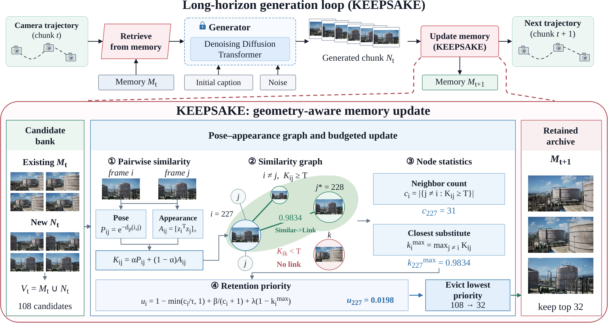

Figure 2 · Method overviewarXiv · 2026 New
Keepsake: Selective Spatial Memory for Long-Horizon Video Generation
A training-free controller that continually reassesses which observations to keep in a fixed-capacity spatial memory. By preserving views with few substitutes, Keepsake improves long-horizon scene consistency across MemCam and WorldMem.